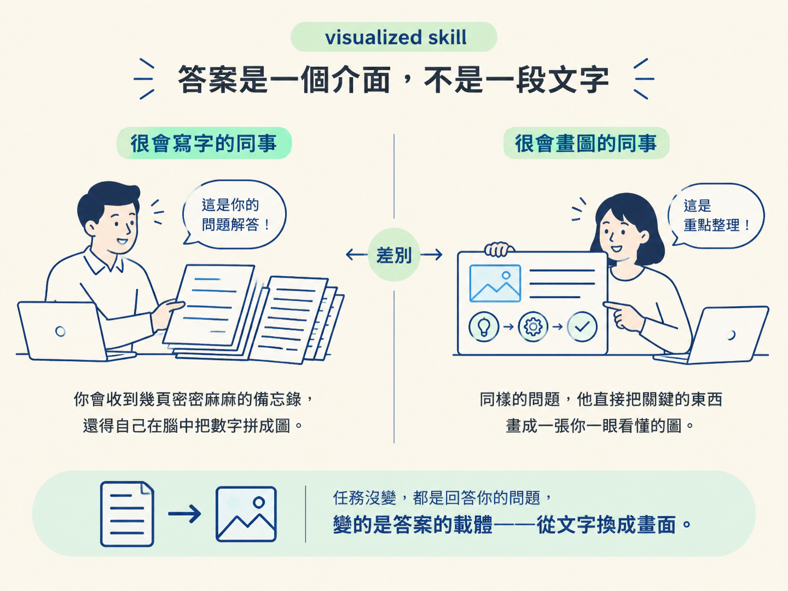
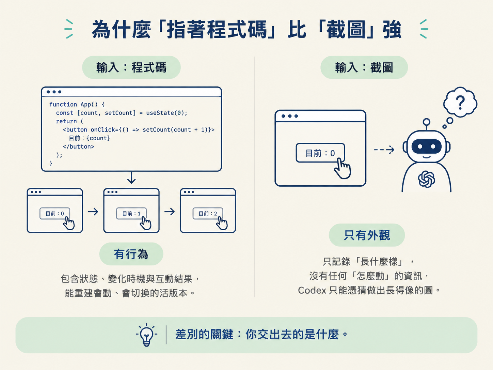
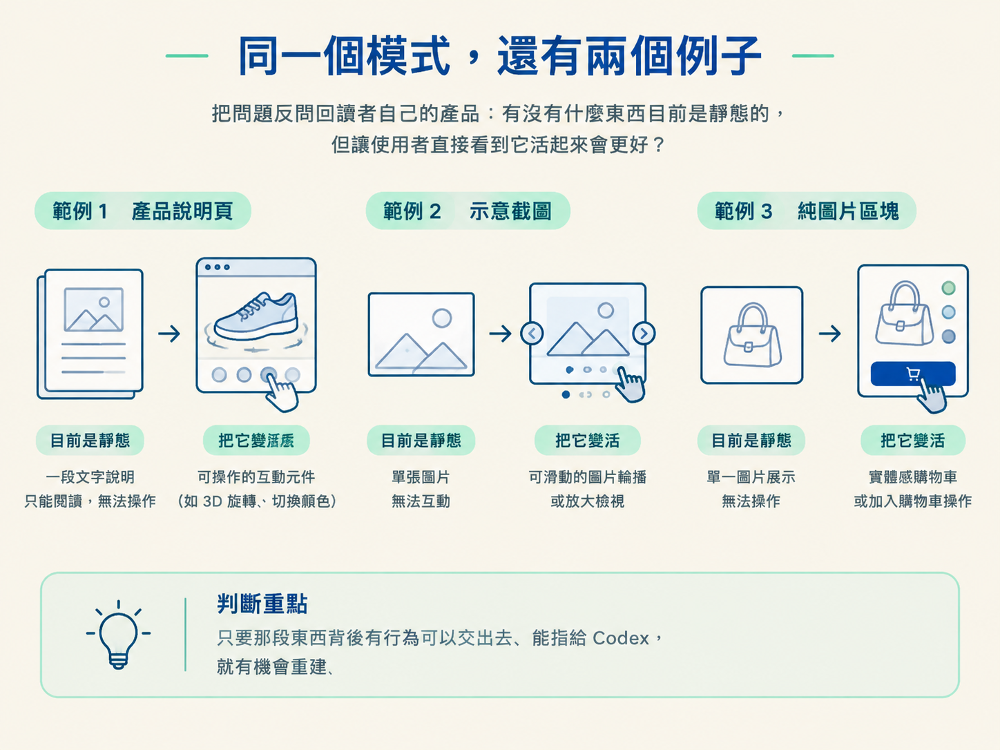

你請 AI 摘要一份很長的文件，它回你一大段文字。你請它分析一組資料，它回你一張表格加幾句結論。答案沒有錯，但讀完之後，那些數字還是得在你自己的腦子裡拼成圖，才算真的「看懂」。
問題就在這裡：文字答案要求讀者自己把最後一步做完，把資訊轉成畫面。理解的成本，其實落在你身上。
這一課的兩個例子，都在把那最後一步直接做出來。一個是讓答案本身變成一個介面；另一個更進一步，把原本只是靜靜說明一件事的頁面，變成你能在上面動手玩的東西。它們是上一課講的 living frontend 的具體樣貌。
先看第一個。visualized skill 是 Codex 新推出的一個 skill，它的行為寫起來很簡單：不在對話裡回你文字，而是替你做一個視覺化。你請它摘要一份長文件、分析一組資料，它可以做成一張圖、一個小介面，或任何把答案講清楚所需要的視覺形式。
換個說法比較好記：平常你是在問一個「很會寫字的同事」，他交給你幾頁備忘錄；visualized skill 像是把問題丟給一個「很會畫圖的同事」，他直接把關鍵的東西畫成一張你一眼看懂的圖。任務沒變，都是回答你的問題，變的是答案的載體，從文字換成畫面。

這正好接上一課的定義：它不是把前端做得更漂亮，而是產生了一種新的輸出型態。過去跟模型互動，輸出幾乎註定是文字；現在輸出可以是一個小小的互動介面。
第二個例子更有意思。learn.chatgpt.com 上有一頁是 visualized skill 的說明文件。照慣例，這種頁面就是靜態文字配幾張截圖。但那一頁不是：它本身就是一個可以互動的元件，滑鼠移上去、點下去，它會真的動給你看。
怎麼做出來的？做這頁的同事沒有手刻整個互動，他只做了一件事：把 Codex 指向 visualized skill 的程式碼，然後說，把這個體驗做出來，一樣的視覺化體驗，但換成給網站用的版本。Codex 看著那段程式碼，一次就把互動重建到文件頁上。用課程裡的話說，這是 Codex 的「one shot」。
這裡有一個可以重複套用的模式：不要只截一張現成東西的圖，而是把程式碼指給 Codex，說「再建一次，但在我的新環境裡」。你給的輸入從靜態圖片換成一段有行為的程式碼，Codex 就有機會重建出「活的版本」，而不只是模仿外觀。
差別在於你交出去的是什麼。截圖只凍結某一個瞬間：它記錄「長什麼樣」，沒有任何「怎麼動」的資訊。Codex 拿到截圖，只能猜背後的行為。程式碼不一樣，它帶著真正的行為：有哪些狀態、什麼時候變化、按下之後發生什麼事。所以指著程式碼重建出來的是活的版本；只給截圖，出來的大概只是一張長得像的圖。

| 指著程式碼重建 | 指著截圖重建 | |
|---|---|---|
| 你給的輸入 | 一段帶有真實行為的程式碼 | 某個瞬間的靜態畫面 |
| Codex 拿到什麼 | 外觀與行為，能重建出活的版本 | 只有外觀，行為得靠猜 |
| 適合什麼 | 想在新環境複製一個可互動的體驗 | 只想重現某個畫面的樣子 |
把這個模式在手上跑一遍，你會比較有感覺。情境是這樣：你手上有一段已經能動的元件程式碼，你想要一個給網站用的版本，但不想重刻。
在 Codex 上的動作只有一個，就是把那段程式碼指給它，說：把這個體驗做出來，一樣的視覺化體驗，但換成給網站用的版本。產出應該是一個新的、可以直接互動的元件，而不是一段描述它長什麼樣的文字。
驗收只看一件事：滑鼠移上去、點下去，它會不會動。會動，代表你交付的是行為；不會動，回頭檢查你給的是程式碼還是截圖。這一步做對，後面所有「把靜態變成活的」都是同一招。
同樣的「重建」思路，套用在另一種輸入上，就是 screenshot-to-component。learn.chatgpt.com 原本的插圖是用截圖的，而 Codex 和 ChatGPT 的介面一直在改，這些截圖就得每隔一陣子手動重截一次。
於是他們做了一個 skill：你給它任何截圖，它會去看 Codex app 的程式碼，把截圖當成一種「方向」，然後把那張圖重建為真正的 HTML 元件：會響應式排版、會跟著主題換色，而且可以直接編輯。
差別很大。截圖是死的，改版就要重做；元件是活的，它會自己跟上。甚至連「構圖」本身都是 HTML 元件，你可以說「把這一塊放到那一塊前面」，而那全部都是程式碼，不是拼貼的圖片。這個 skill 就是下一課要動手做的東西，這裡先讓你知道它在整條線上的位置。
Codex Mini 是一個內部做的小工具，把 Codex app 做成迷你版，讓你直接在瀏覽器裡點著玩，就放在說明文件上，用來讓人理解這個 app 怎麼運作。它不是真的 Codex app，只是一個元件。Codex remote 則是另一個例子：團隊在 offsite 辦了一場一小時的 hackathon，其中一個作品就是把它做出來，作者做的事也只是「把 Codex 指向那段程式碼」，就重建出一個功能完整、可以互動的示範介面。
還有一個刻意跳脫的例子：一個 landing page，把購物車做成「真的可以把東西丟進去」的實體感互動。它不在開發者網站上，也不是什麼正經的產品功能，但它示範了同一件事：以前想不到的互動型態，現在 Codex 可以一次做出來。
把這些例子擺在一起，它們其實在問你同一個問題：你的產品裡，有沒有什麼東西目前是靜態的，但讓使用者直接看到它活起來會更好？如果有，那條路是通的，前提是那段程式碼存在，而且你能把它指給 Codex。

visualized skill 讓答案的載體從文字換成畫面：它替你做一張圖或一個小介面，而不是回你一段文字。互動文件則是「指著程式碼、請 Codex 在新環境重建體驗」的結果：把 visualized skill 的程式碼指給 Codex，它就一次把那份說明頁變成可以動手玩的元件。這條模式的核心在輸入的選擇：給程式碼能重建出「活的」，給截圖只能模仿外觀。screenshot-to-component 就是同一招用在截圖上的版本。
這兩個觀念和上一課的 living frontend 是同一條線：living frontend 是「輸出可以是介面」這個觀念，visualized skill 是它的載體形式，「指著程式碼重建」則是生產它的方式。下次你看到一段靜態說明，判斷點就一個：它有沒有行為可以交出去？有行為就指著程式碼重建，沒有才退回截圖。這條判斷會直接決定你下一課實作 screenshot-to-component 時，驗收的標準是什麼。